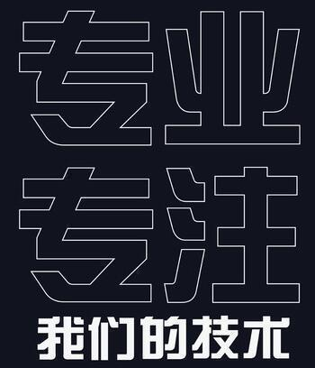

今天，我作为“前辈”给公司新入职的应届毕业生们做了一次经验分享，简单整理了一下内容，希望对其他人也能有所帮助。
1.进入公司与校园有什么不同 ？
作为一个技术型的公司，其实公司内部的办公环境与在学校实验室没有太大的区别，每个人都有自己的位置，大家各司其职，为公司的项目贡献自己的代码，偶尔跟学长/学姐们一起调试问题，一起解决Bug，项目空档期还可以看看书，学习提高……
如果非要说有什么不同，我想更多的是在生活方面吧。
大家背井离乡，独自来到城市，第一个要面对的社会问题就是租房，可能会遇到一个黑心的中介，也可能会遇到一个恶心的房东，无论你是吃亏了也好，还是被骗了也好，请坦然面对，因为离开校园以后的人生路上，你还会遇到更多更多的麻烦事，遇到更多更多的“坏人”，学着在每一次吃亏上当中总结经验教训，总有一天，你会强大起来，不再让父母在遥远的家乡继续为你操心。
第二个会面对的问题，就是下班后的孤独感。如果跟你一起来工作的朋友比较少的话，这种感触或许会更深。住了4~7年的学生宿舍，习惯了每天晚上回到寝室侃大山，习惯了有一群哥们陪你打游戏，甚至习惯了偶尔能跟室友绊个嘴闹点小矛盾。如今，每天回到住处，面对的是空空如也的房间，你必须得适应这样的生活。当然，你也可以选择每天加班到很晚再回去，不过我建议最好的办法就是赶紧找到另一半吧。
第三个就是你会发现如今的生活变得非常有规律了。刚刚习惯了大学生活的丰富多彩，一下子又回到的高中时代的两点一线，周一到周五，不会再有任何新鲜感，甚至连锻炼身体的时间都没有了，我就是从工作到现在已经涨了12斤了。希望大家不要学我，一定要有自己的锻炼计划，比如每周打几次篮球、晚上去跑跑步，或者健身、游泳，什么都好，身体是革命的本钱，虽然年轻，但一定要好好爱惜。
第四个就是有工资了。这可是一个质的飞跃，自此以后，你再也不用伸手向父母索要生活费了，还可以反过来买点东西孝敬孝敬他们；你终于可以买喜欢的礼物送给心爱的他/她了；你也可以经常去餐馆吃顿大餐，或者买几件贵点的衣裳，而不用担心后半个月天天只有啃馒头度日了……
当然，你肯定会体验到更多的不同，这里我也不一一赘述了，希望大家能早日适应离开校园步入职场以后的生活。
2. 我的经验和建议
下面进入正题，我将从技术的角度，给大家讲讲我在公司这一年多以来收获的经验和教训。

2.1 让自己的工作更加“专业”
现在你已经成为公司的一名正式的员工了，你所开发的产品可能会直接投入到市场，会面对客户，因此，再也不要像在实验室做研究那样随随便便了，你要时刻为自己的工作负责，要想得到老板和客户的赏识，你就必须表现得足够的专业。
（1） 提交代码之前请充分测试
公司的产品可能需要很多部门的通力合作，你的代码指不定哪一天会被应用到一个重量级的产品上面，请不要留有Bug，一旦经过复杂的集成之后，再去定位和修改你的代码通常会是一件非常耗时耗力的事情。
（2） 保持“封装”意识
“封装”有无数的好处，可以让程序的结构更加清晰，可以在其他项目中重复利用，方便调试和定位问题，带来更好地可替换性和可移植性，不要因为偷懒或者赶进度就放弃模块化，良好的代码结构会给项目带来无尽的好处。
（3） 关心性能和效率
关注性能和效率并不仅仅是算法开发人员的专利，每一个程序员都要有这种意识，你要时刻做好准备被提问以下这几个问题：你的算法执行时间是多久？ 你的程序占用内存多大？ CPU占用率呢？
能够第一时间回答老板或者客户关于性能的提问，会让你显得非常地专业，同时，性能的测试往往能够帮助你找到很多隐藏的Bug。很多次，我都是在关注系统内存占用曲线图的时候发现一些内存泄露并且解决掉的。
（4） 版本控制
客户的需求总是不断改变的，你刚刚开发好的功能今天客户说不要了，说不定明天他又会需要，所以保持一个良好的版本控制记录，会让你的工作游刃有余，谁都不喜欢把做过的事情删除掉然后重新再做一遍的感觉。
当然，版本控制还有另外一个好处就是协助你定位Bug，一旦遇到问题，你总是能够通过版本回滚找到没有该问题的版本，并通过对比找到问题所在。
有很多工具可以帮助我们进行版本控制，如Git，Svn，当然哪怕是使用最原始的建立N多个文件夹的方式也总比没有版本控制的好。最简单的版本控制就是在本机存档，不同的版本写好不同的新增功能或者修改的描述。
（5） 写出“专业级”的代码
什么是专业的代码？我们评价一份代码专业不专业并不仅仅是看它是否实现了所需的各项功能，而更多的是体现在代码的命名、结构、注释、内存管理等等一系列的地方。
举个例子吧，你们扪心自问一下，在你们做过的项目中，是不是确保了每一个申请的资源都正常释放了？Socket的阻塞是否真正地唤醒了？有没有代码修改了注释却忘记修改的时候？
真正优秀的程序员，并不是指他们写出的程序没有Bug，而是他们在写程序的时候，会考虑得更加全面和仔细，去避免一些不必要的Bug出现。
2.2 原创和版权意识
我记得有人说过，你要实现的大部分技术或者功能，你都不会是第一个做的，也不会是最后一个做的。所以，在接手一项不熟悉的任务的时候，我们通常都会去Google/Baidu上搜索一下，看看有没有类似的案例，看看有没有别人写好的代码。
的确，网上别人的代码的确可以帮助我们快速地实现一些功能，但是你要时刻注意，网上的代码，尤其是一些国内博客中给出的代码，经常写得非常地不严谨，你在使用它们之前，一定要充分地理解和消化，解决掉其中隐含的Bug，最好能够用自己的方式实现一遍。不假思索地拿来就用，很可能就在项目中埋下了一个炸弹，随时都有可能会爆炸。
另外，为公司开发产品，一定要注意版权意识，在使用第三方开源代码或者库之前，请仔细阅读License，不要让公司莫名其妙地背上侵权的恶名。
最后我还想说明一下的就是，对自己做的东西，一定不要浮于表面，要深入地理解其原理，不要过于依赖别人的代码或者第三方库，要相信自己，搞清楚了原理，其实你是有这个能力自己去实现这些功能的。
2.3 向你的老板学习
技术人员一般都很自负，很容易否定同行，在学校我深有体会。几乎我认识的每一个研究生都很鄙视自己导师的“技术水平”。但是在我们公司，请大家相信，你的老板之所以能够成为你的老板，一定是有他的过人之处的，请虚心向他学习，你一定能收获很多。
这一年多以来，我就从我的老板身上学到了很多很多，除了上面提到的一些感悟以外，简单地再列举几点吧。
（1） 不惧怕任何问题
我一直有个毛病，就是只要是我自己写的代码，一旦出了问题，我有100%的信心找到根源，并且漂亮地解决掉。但是，一旦项目中集成了太多第三方库或者其他人的代码，而且问题在他们那块的时候，我就会不自觉地退缩和抱怨，而老板从来都不会，他总是会跑过来跟我一起耐心地调试，一行行地阅读和分析那些“晦涩”的代码，直到找到问题所在为止。这一点我真的很佩服，老板是整个项目组最后一道屏障，一旦老板都退缩了都放弃了，项目也就黄了。所以，我觉得，这一点是我要走向老板之路必须具备的品质。
（2） 不放过任何一个Bug
项目中的Bug，一旦被我老板知道了，无论是过一天、一周、甚至一个月，他永远都不会忘记，总会时不时过来问问我，那个Bug解决了没有，怎么解决的，具体原因是什么。我想，所有被称之为优秀的产品或许就是由一个个这样执着的老板们造就的吧。
（3） 听从员工的建议
我一直觉得，对于任何一个产品，除了客户，奋斗在第一线的研发人员是最有发言权的，他们会比很多高层领导更加清楚产品的技术细节。我不喜欢开会的时候只有接受任务的义务，而没有发言的权力。所以，我喜欢让我说话的老板，我的老板在这一点就做得真的非常好，很多我的建议都被采纳到了产品的设计中了，这让我非常有成就感。
在一个技术型的公司里，好的老板不是靠官职来压人，而是靠人格魅力来“领导”人。
2.4 拼命去提高你的技术
高中的时候，我们以为考入好大学了就一辈子轻松了，于是我们为了进一个好大学而拼命努力；而到大学了，我们又发现，还是得努力，找到一个好工作就舒坦了，于是我们又奋斗了7年，现在你们成功了，来到了一个好公司，享受着不错的薪水。但是我还是得遗憾地告诉你们，这还不够，我们依然得努力，为了我们能在大城市活得更好。
我们时刻要很清楚我们现在处于一个什么样的人生阶段。
现在的我们，属于职场新人，在这职业生涯的头几年，你还没有成家，还没有小孩，没有太多生活负担，所以这是提高技术实力、积攒经验最重要的几年，我们绝不能让它荒废了。你现在无论多么努力去工作、去学习，都不为过，你要时刻想着，你不仅仅在为公司在努力，你其实也在为自己在奋斗。
我有一个实验室的同学，跟我一起进入的我们公司，这一年以来，他非常努力，晚上经常在公司加班学习到10点，每次碰到他，他还都在感慨自己掌握的东西太少了，好多技术等着他去探索。当初毕业时我跟他在一个起跑线上，如今，我已明显感觉被他远远甩在身后了。
突然想起一句话：比你优秀的人不可怕，可怕的是比你优秀的人比你更努力。
2.5 扩宽视野
一个人的视野决定了一个人可以企及的高度。我相信这句话，我希望大家都不要做井底之蛙，我们不能仅仅只会低头走路，我们也要学会抬头看路。
（1） 时刻关注行业动态
密切关注你所在行业的资讯和趋势，让自己永远不要落伍。记住，机会永远只会眷顾有准备的人的。今天你花了时间和精力了解和掌握的东西，真的说不准在未来的哪一天就会派上用场。
（2） 广泛地阅读
我有个朋友，我跟他聊天感觉特别投机，从小到大都没有遇到过聊得这么投机的人，而我最近才真正明白为什么，因为我们的话题并不仅仅局限在编程、工作、房价、电影这样一些老生常谈。文学、历史、经济、社会、佛学等等很多话题都能成为我们聊天的内容。
我想没有人不喜欢“丰富”的人，怎样让自己更加“丰富”呢？一个是阅历，经历得事情多了，你知道的东西也就多了；另一个就是阅读，广泛地阅读能带给你广泛地知识面，而这样的知识面，无论是社交还是找另一半，都会带来很大的帮助。
（3） 多参加行业交流活动
想起前段时间网上讨论的一个很热烈的话题，就是“为什么年轻人，大都愿意来北上广深打拼，即使过得异常艰苦，远离亲人，依然义无反顾？”其实在我看来，因为这里真的会有更多的机遇，好公司多，牛人云集，视野更开阔。
就拿行业交流活动来说吧，12号我就去参加了上海GDG组织的“中国Android开发者日”活动，听了很多行业内牛人的演讲，真的收获挺大的，我想，如果我在一个小城市发展，或许就不会有这样的一些机会去参加这样的活动吧。
那么，大家既然身在“北上广”，你就应该好好利用身边的资源，多多关注当前你所在的行业是否有一些交流的活动，多去参加参加，无论是否能够认识一两个“大牛”，至少去了，就一定会有收获的。
（4） 密切关注“招聘需求”
这是我从大学以来一直保持的一个习惯，我会定期地去各大招聘网站，下载各个公司对某个我心仪的职位的招聘需求，然后回来一条条跟自己比较，看看哪些我还没有满足，哪些我已经满足了但是还需要提高，然后给自己制定一个短期内目标，就是让自己尽快满足这些能力要求。一旦都满足了，我就会进一步提高搜索条件，找出哪些待遇更高的高级开发职位的要求，然后一步步地去满足它。
我一直觉得，真正地牛人，永远不会让自己去“吃老本”，一个真正的牛人，他时时刻刻都会不断地去提高自己，征服了一个高峰，再去攀登下一个高峰。
2.6 保持乐观的心态
其实我从大一开始，一路走来，经历了很多很多，有苦有累有过挫折也有过迷茫。但是我很庆幸地是，我一直保持着一种乐观的心态。在身边的一群朋友中，我一直是一个传递着“正能量”的人，正是这样一种积极乐观的心态，让我一直能过得开开心心，也能坦然面对很多生活中的很多烦恼和打击。
我希望大家也能一样保持一种积极乐观的心态，洒脱点，一切想开一点，所有的困难权且当做人生的历练吧。相信自己，相信公司，相信自己在公司一定会有一个美好的明天！
原文：
写给新入职的毕业生们